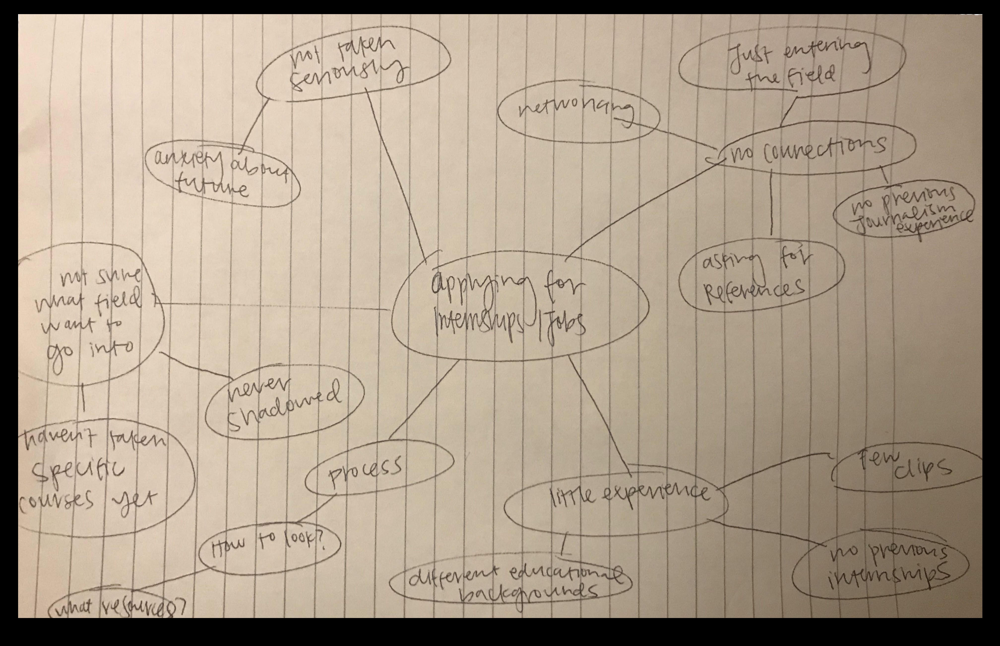

Graduate students at Philip Merrill College of Journalism are concerned about their ability to get internships while in school and to get jobs after graduation. Because graduate students have different educational backgrounds, they don’t have the same journalism experience when applying for internships and jobs. For example, by the time an undergraduate student applies for an internship, they have had a few years worth of experience, many clips, and maybe a few internships. When a graduate student begins applying for internships, they have had two months of classes and often only have a couple of clips.
Furthermore, journalism graduate student don’t have industry connections as they are are just entering the field and come from all around the country. They often feel like they are underqualified and not taken seriously. This can sometimes lead to anxiety and uncertainty about the future. We would like to address this challenge and help journalism graduate students in their search for internships and jobs.
As Philip Merrill College of Journalism graduate students ourselves, we understand to an extent the problems that we and many in our cohort face. We began our brainstorming by creating a mind map and laying our concerns out on paper.
As we discussed the challenges that we mapped out, we saw that there was a need for more career development and networking opportunities for graduate students in addition for the chance to see how media and news organizations operate on a daily basis.
Our goal with this project is to simplify the career and internship finding process for journalism graduate students at the University of Maryland. We want to ease stress and uncertainty about future employment, help students develop relationships with professionals in the industry and give them the tools to gain the experience they need to market themselves to potential employers.
We will know we are successful in this pursuit if graduate students are less stressed in seeking jobs and internships, if they know how to market their unique skill set, and if they are confident about going into the field of journalism.
The people involved in our topic are primarily graduate students in the Philip Merrill College of Journalism. Our cohort consists of about 30 master’s students. Class size fluctuates by year, but generally there are about (70~) graduate students enrolled in a Merrill master’s program each year since 2015.
We decided that we wanted to interview graduate students in our cohort, a graduate student that is one year above us, and Adrianne Flynn, internship and career services counselor. To come up with questions, we discussed what we wanted to learn from them. We wanted to understand their backgrounds, why they wanted to pursue a career in journalism and a detailed report on their search for jobs and internships. We wanted to know the struggles they faced and the things that have been helpful to them so far in their search.
Each of our three team members interviewed two individuals. The interviews were either conducted in-person, on the phone or by email and each interview lasted about 30 minutes. In-person interviews were conducted in the journalism building. No equipment was used, but notes were taken either on the computer or on paper. We then used our notes to write up summaries of our conversations.